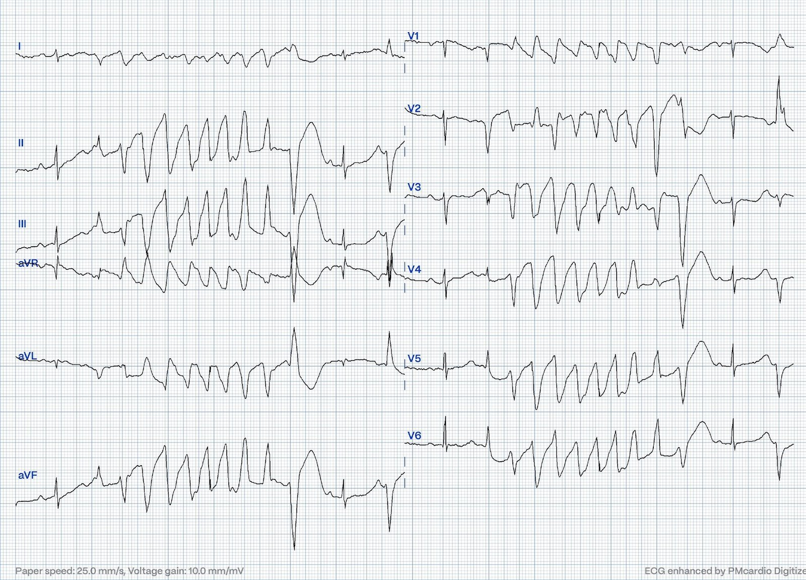
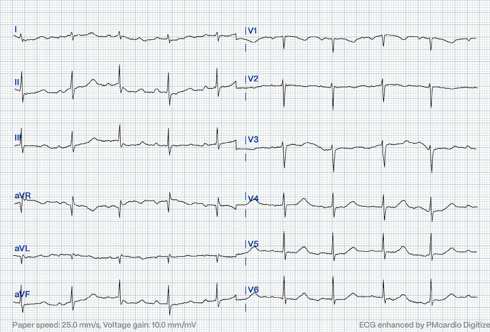
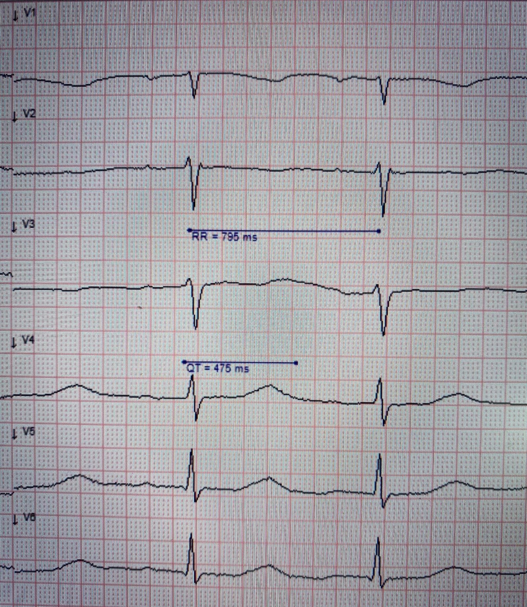
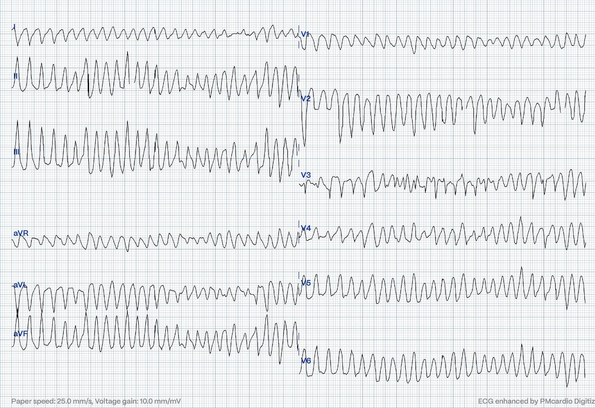
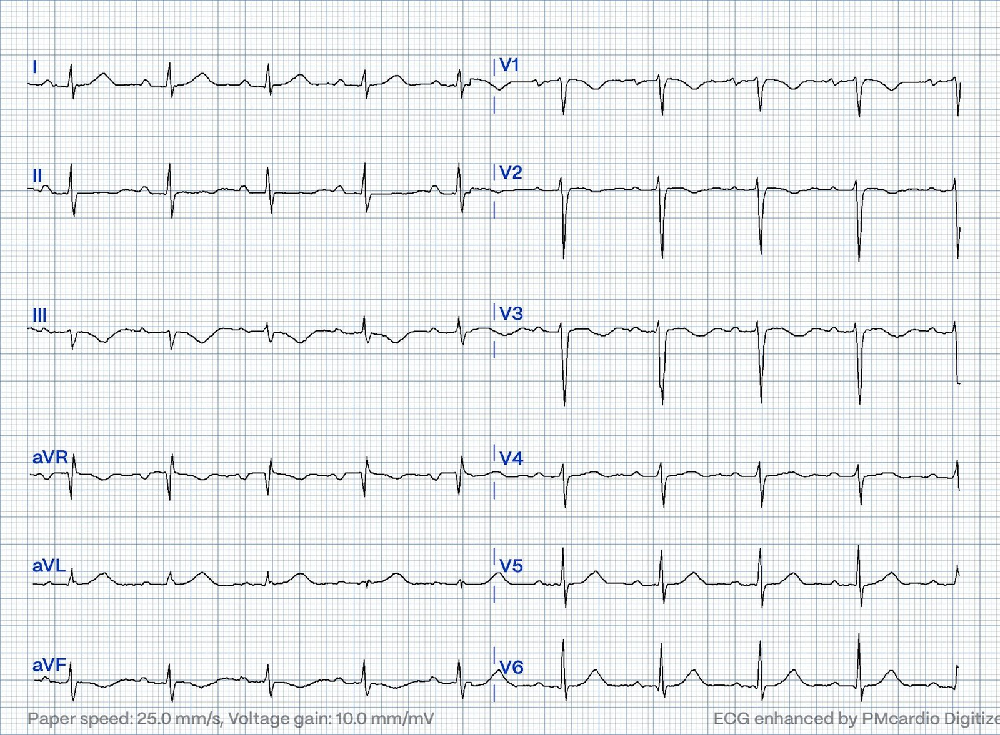
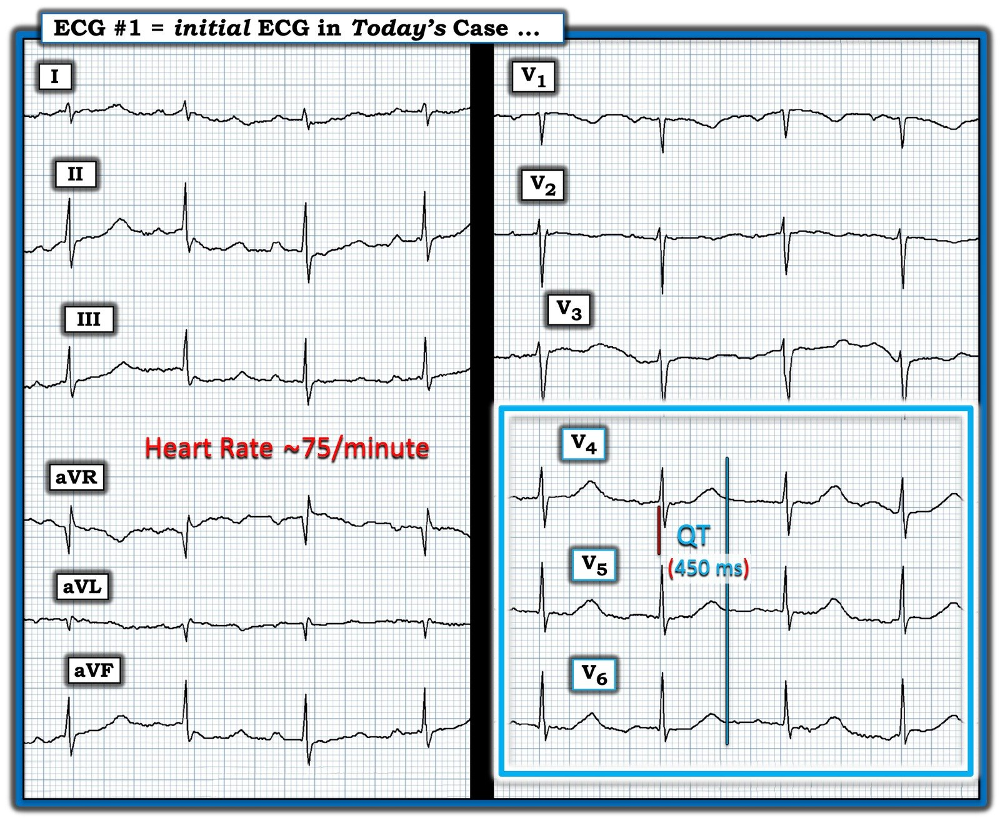
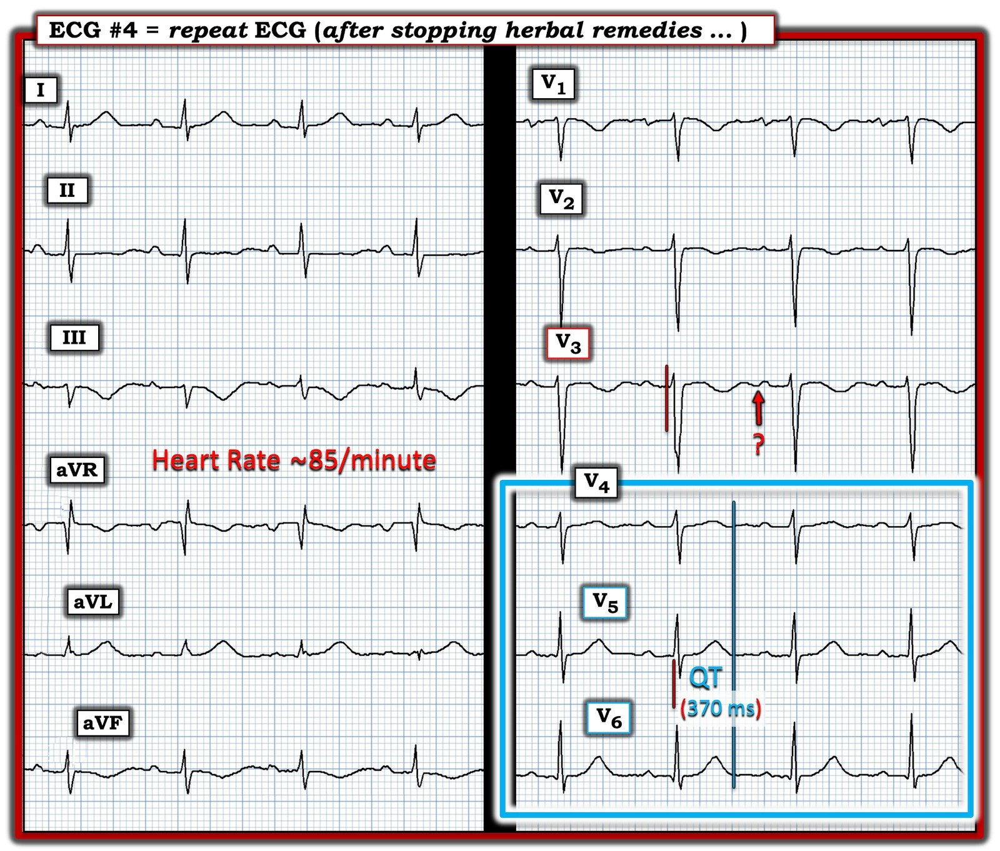

02/09/2024 — Co giật ở một người ngoài 30 tuổi
Bản dịch tiếng Việt của bài "Seizure in a 30 something" – Dr. Smith’s ECG Blog. Giữ nguyên toàn bộ 9 hình ảnh của bản gốc.


Bài viết của Magnus Nossen — có chỉnh sửa của Grauer.
Bệnh nhân trong ca hôm nay là một phụ nữ ngoài 30 tuổi. Cô không có tiền sử bệnh lý nào được biết trước đó. Chồng cô đã gọi đội cấp cứu ngoài viện (EMS) khi bệnh nhân lên cơn co giật mới khởi phát kèm tiểu không tự chủ. Điện tâm đồ dưới đây do EMS ghi. Bạn đánh giá thế nào?
Điện tâm đồ #1


Diễn giải: Điện tâm đồ #1 cho thấy nhịp xoang với tần số tim 77 lần/phút. QRS hẹp, khoảng PR bình thường. Trục QRS bình thường. Có một ít trôi đường nền. Thoạt nhìn, điện tâm đồ này trông không quá bất thường. Tuy nhiên, ngất do tim luôn là một chẩn đoán phân biệt khi một người đến khám vì co giật lần đầu. Theo kinh nghiệm của tôi, dấu hiệu bệnh lý trên điện tâm đồ trên là dấu hiệu dễ bị bỏ sót nhất — đặc biệt nếu bạn đang vội và không xem xét một cách có hệ thống.
Có nhiều điều cần tìm trên điện tâm đồ có thể gợi ý rối loạn nhịp là nguyên nhân của một cơn có vẻ là co giật. Dưới đây là một số tình trạng cần lưu ý:
- Tiền kích thích
- Hội chứng Brugada.
- Bệnh cơ tim gây loạn nhịp
- Hội chứng QT dài
- Bệnh cơ tim phì đại.


Tôi thấy đo QTc dễ hơn khi tốc độ giấy là 50mm/s, như trong hình trên. Tôi đo được khoảng RR là 795ms và khoảng QT là 475ms. QTc tính ra là 533ms, kéo dài đến mức nguy hiểm.
Trên đường đến bệnh viện, bệnh nhân đã trải qua nhiều cơn ngắn, kèm co cứng cơ và mất ý thức. Cô nhanh chóng tỉnh lại — và tỉnh táo giữa các cơn. Có một cơn kéo dài hơn. Các điện tâm đồ dưới đây được ghi lại bằng theo dõi 12 chuyển đạo liên tục trong lúc vận chuyển!
Điện tâm đồ #2
Diễn giải điện tâm đồ #2:
Nhịp nền là nhịp xoang. Các nhát xoang có khoảng QT rất kéo dài, dường như còn dài hơn cả ở điện tâm đồ đầu tiên. Có một loạt nhịp nhanh thất đa dạng — mà với tình trạng QT kéo dài, được xếp là xoắn đỉnh (Torsades de Pointes) (TdP). Loạt TdP này được khởi phát bởi một PVC — nhưng sau đó tự kết thúc.
Điện tâm đồ #3


Diễn giải điện tâm đồ #3:
Nhịp này bắt đầu là xoắn đỉnh (Torsades de Pointes) — rồi sau đó chuyển thành rung thất (V-Fib). Cơn này tự kết thúc trước khi kịp khử rung.
====================================
Bàn luận: Bệnh nhân trong ca hôm nay đến khám vì “co giật”. Ca này minh họa lý do vì sao mọi bệnh nhân co giật đều nên được ghi điện tâm đồ. Bệnh nhân này bị các cơn nhịp nhanh thất đa dạng tái diễn trên nền khoảng QT dài ( = xoắn đỉnh). Tại khu vực ổn định bệnh nhân, cô được tiêm tĩnh mạch 10mmol magnesi sulfat, tiếp theo là truyền duy trì. Truyền kali clorid cũng được bắt đầu. Kali lúc nhập viện là 3.5mmol/L (Tham chiếu 3.6-4.6) và magnesi là 0.88 mmol/L (Tham chiếu 0.71-0.94). Cô ổn định sau khi được bù điện giải và không còn cơn TdP nào nữa.
- Sau khi hỏi bệnh kỹ hơn — hóa ra bệnh nhân đã bắt đầu dùng 9 loại thuốc thảo dược khác nhau để làm giảm tình trạng mệt mỏi uể oải và các triệu chứng thần kinh không đặc hiệu. Không rõ chính xác đó là những thuốc thảo dược cụ thể nào và đã uống với liều lượng bao nhiêu.
Dưới đây là điện tâm đồ theo dõi sau khi ngừng các thuốc thảo dược. QTc ngắn đi đáng kể. Rất có khả năng các thuốc thảo dược đã gây kéo dài khoảng QT và dẫn đến xoắn đỉnh.


Trong ca hôm nay — QTc đã ngắn lại sau khi ngừng thuốc thảo dược. Điều quan trọng cần biết là điều này không loại trừ hội chứng QT dài bẩm sinh (LQTS). Khoảng QT có thể bình thường ở bệnh nhân LQTS, và đôi khi chỉ biểu hiện sau một yếu tố khởi phát như hạ kali máu hoặc một số thuốc.
- Bệnh nhân không có tiền sử gia đình về động kinh, đột tử do tim (SCD) hay ngất tái diễn.
- Kết quả xét nghiệm di truyền LQTS đang chờ — và bệnh nhân đã được chuyển đi đánh giá chỉ định đặt máy khử rung tim cấy được (ICD).
Những điểm cần học:
- LQTS có thể có QTc bình thường.
- Mọi bệnh nhân co giật đều cần được ghi điện tâm đồ.
- Thuốc thảo dược có thể đe dọa tính mạng
Xem ca này để có thêm một ví dụ khác về rối loạn nhịp thất thứ phát do thuốc thảo dược.

===================================
BÌNH LUẬN CỦA TÔI, bởi KEN GRAUER, MD (2/9/2024):
===================================
Ca hôm nay của BS. Nossen hấp dẫn bởi sự phức tạp của nó — vì bệnh nhân là một phụ nữ trẻ trước đó khỏe mạnh, biểu hiện bằng một cơn co giật mới khởi phát.
- Như đã nêu ở trên — bệnh nhân bị ngất do tim sau một loạt cơn TdP (Torsades de Pointes) — điều này đặt ra câu hỏi liệu TdP có gây ra cơn co giật lần thứ 1 của cô — hay — chính cơn co giật đã thúc đẩy rối loạn nhịp ác tính của cô? (Xem Costagliola và cs. — Ann Clin Transl Neurol 8(7): 1557-1568, 2021 — để biết thêm về “Tương tác Não–Tim” phức tạp trong động kinh).
- Ca hôm nay còn phức tạp thêm bởi điều mà tôi nghi ngờ là tình trạng thiếu hụt K+ và Mg++ trong cơ thể (do đó cả trong cơ tim) — xét theo nồng độ huyết thanh (dịch ngoại bào – ECF) cùng lắm chỉ ở mức “giáp ranh” của các cation này như đã báo cáo ở trên trong ca hôm nay (tức là 3.5 mEq/L đối với K+ và 1.76 mEq/L đối với Mg++) — trong khi nồng độ các cation này trong dịch ngoại bào chỉ chiếm ~1-2% tổng lượng dự trữ của cơ thể (Jahnen-Dechent và Ketteler — Clin Kidney J 5(Suppl 1):i3-i14, 2012 — và — Udensi và Tchounwou — Int J Clin Exp Physiol 4(3): 111-122, 2017).
- Thêm vào đó là việc bệnh nhân hôm nay đã dùng nhiều sản phẩm thảo dược trong một khoảng thời gian không rõ, và không biết đó là những sản phẩm thảo dược nào, do đó cũng không biết khả năng tương tác của các phối hợp thảo dược có thể có (Xem Déléaval và cs. — HeartRhythm Case Rep 8(5), 2022 — và — Kawatani và cs. — Oxford Med Case Rep 2023(9), 2023 — để biết thêm về các tác dụng gây loạn nhịp tiềm tàng của sản phẩm thảo dược, bao gồm kéo dài QTc).
Để rõ ràng, trong Hình 1 — tôi đã đưa lại điện tâm đồ ban đầu của ca hôm nay. Như BS. Nossen đã nói — sẽ quá dễ dàng để lướt qua điện tâm đồ này như là “không có gì đáng chú ý” — NẾU người đọc không thường quy đọc một cách có hệ thống tất cả các điện tâm đồ mà mình gặp.
- Để ôn lại việc đọc điện tâm đồ 12 chuyển đạo một cách có hệ thống không chỉ làm tăng độ chính xác, mà còn giúp bạn đọc nhanh hơn như thế nào — Mời xem ECG Podcast #1, với dàn ý và đường link tới bài nói của tôi về chủ đề này trong bài ngày 24 tháng Bảy năm 2024 trên Dr. Smith’s ECG Blog.
Về đánh giá có hệ thống của tôi đối với điện tâm đồ #1:
- Có nhiễu đường nền đáng kể, cũng như trôi đường nền. Hãy nhớ rằng kết quả đọc điện tâm đồ của bạn cho bệnh nhân là một phần của hồ sơ bệnh án. Vì vậy tôi cho rằng việc ghi nhận (trong phần đọc kết quả/trong hồ sơ bệnh án) khi nhiễu đáng kể có thể làm giảm độ chính xác của kết quả đọc là điều cần thiết. Do việc đo chính xác khoảng QT rất quan trọng trong ca này — nên ghi nhận có nhiễu trên điện tâm đồ #1 là điều cần thiết!
- Nhịp trên điện tâm đồ #1 là nhịp xoang với tần số ~75/phút.
- Các khoảng: Khoảng PR hơi kéo dài (tôi đo được ~0.22 giây). Phức bộ QRS bình thường (tức là không quá 0.10 giây). Khoảng QT có vẻ kéo dài (XEM chi tiết ở dưới).
- Trục mặt phẳng trán bình thường (khoảng +70 độ).
- Không có lớn các buồng tim.
Về Thay đổi Q–R–S–T:
- Có vẻ có sóng Q ở chuyển đạo aVL (so với một phức bộ rSr’ ) — mà nếu là dấu hiệu đơn độc thì ý nghĩa không chắc chắn (nếu có).
- Tăng tiến sóng R phù hợp — với vùng chuyển tiếp (nơi sóng R trở nên cao hơn độ sâu của sóng S) xảy ra bình thường ở chuyển đạo V4.
- Đánh giá sóng ST-T — là khó khăn, vì trôi đường nền và nhiễu (làm hình dạng thay đổi từ 1 nhát sang nhát kế tiếp) — và — vì sóng ST-T dẹt không đặc hiệu ở nhiều chuyển đạo. Tuy nhiên, như minh họa trong hình chữ nhật màu XANH ở Hình 1 — điểm kết thúc của sóng T được thấy rõ ở các chuyển đạo V4,V5,V6 (đường thẳng đứng màu XANH ở các chuyển đạo này).
Điểm MẤU CHỐT: Khoảng QT nên được đo ở CHÍNH chuyển đạo mà bạn thấy rõ nhất điểm kết thúc của khoảng QT, và là chuyển đạo có QT dài nhất.
- Như minh họa trong Hình 1 — Theo tính toán của tôi, QT đo được = 450 msec. Để xác định QTc — Chúng ta cần hiệu chỉnh giá trị 450 msec. này theo tần số tim của bệnh nhân là ~75/phút.
- Có nhiều cách để ước tính QTc (tức là, tôi minh họa một phương pháp dễ dùng do tôi xây dựng và đã sử dụng trong nhiều thập kỷ trong bài ngày 25 tháng Mười năm 2023).
- ĐIỂM THEN CHỐT (PEARL) #1: Một cách khác — MD CALC là một đường link tiện dụng cho phép hiệu chỉnh gần như tức thì QT đo được theo tần số tim — giúp bạn tính QTc theo bất kỳ công thức nào trong 5 công thức hiệu chỉnh thường dùng nhất ( = Bazett — Fridericia — Framingham — Hodges — Rautaharju). Nhập các con số trên vào MD CALC với tần số tim 75/phút cho kết quả QTc trong khoảng 476-đến-503 msec. (tùy theo bạn chọn công thức nào trong 5 công thức này). Tất cả các giá trị này đều rõ ràng vượt quá ~450 msec. mà tôi ưa dùng làm mức giới hạn trên bình thường “ước chừng” của QTc.
- Nhận định của tôi về điện tâm đồ #1: Nhịp xoang ~75/phút — với thay đổi ST-T không đặc hiệu và QTc kéo dài. Do nhiễu đường nền và hình dạng sóng ST-T thay đổi rõ rệt từ 1 nhát sang nhát kế tiếp — tôi thấy khó xác định có (hay không có) sóng U trên điện tâm đồ #1. Dù vậy — ở một bệnh nhân xuất hiện TdP — hình ảnh tổng thể của điện tâm đồ ban đầu này phù hợp với hạ K+ và/hoặc hạ Mg++ (Xem Bình luận của tôi trong bài ngày 9 tháng Năm năm 2020 — để biết thêm về chẩn đoán hạ kali máu và hạ magnesi máu trên điện tâm đồ).
- ĐIỂM THEN CHỐT (PEARL) #2: Dấu hiệu bất thường chính trên điện tâm đồ này là QT kéo dài, ở đây kèm các bất thường sóng ST-T lan tỏa không đặc hiệu. Qua nhiều năm, tôi thấy việc nhớ một DANH SÁCH ngắn các nguyên nhân gây QT kéo dài giúp ích vô cùng. Như trong Bình luận của tôi ở bài ngày 19 tháng Ba năm 2019 trên Dr. Smith’s ECG Blog — Giả sử không có blốc nhánh, thiếu máu cục bộ hay nhồi máu (vì các tình trạng này có thể làm kéo dài QT) — HÃY NGHĨ ĐẾN: i) THUỐC (nhiều thuốc [kể cả các chế phẩm thảo dược] có thể làm kéo dài khoảng QT — và phối hợp nhiều thuốc có thể gây kéo dài rõ rệt); ii) ĐIỆN GIẢI (tức là, Hãy nghĩ đến hạ K+, hạ Mg++, hạ Ca++); và/hoặc, iii) một thảm họa thần kinh trung ương (CNS) (tức là, đột quỵ, chảy máu, hôn mê, co giật, chấn thương, u não).
- Áp dụng DANH SÁCH trên vào ca hôm nay: Cả 3 nhóm trong DANH SÁCH trên đều có thể góp phần vào tình trạng QTc kéo dài mà chúng ta thấy trên điện tâm đồ #1: i) Thuốc (Bệnh nhân này đang dùng một số thuốc thảo dược); — ii) Điện giải (Nhiều khả năng thiếu hụt K+ và Mg++ trong cơ thể — xét theo nồng độ huyết thanh ở mức bình thường thấp của các cation này và các bất thường sóng ST-T lan tỏa không đặc hiệu kèm QTc [hoặc QT-U] kéo dài trên điện tâm đồ); — và, iii) Thần kinh trung ương (Hoạt động co giật).
- T.B. (P.S.): Để có thêm một ví dụ lâm sàng khác về việc DỄ-DÀNG-đến-thế-nào khi bỏ sót một QTc dài nếu không có cách tiếp cận hệ thống — Mời xem bài ngày 3 tháng Năm năm 2020 trên Dr. Smith’s ECG Blog.


Điện tâm đồ theo dõi trong Hình 2:
Bệnh nhân trong ca hôm nay đã ngừng các thuốc thảo dược. Một thời gian sau đó — điện tâm đồ trong Hình 2 được ghi (đây là điện tâm đồ thứ 4 đã được trình bày ở trên trong phần bàn luận của BS. Nossen).
CÂU HỎI:
BS. Nossen đọc điện tâm đồ #4 là cho thấy QTc giảm đáng kể sau khi bệnh nhân ngừng các chế phẩm thảo dược.
- Thay vì QTc giảm — Chẳng phải việc sóng T trở về đường nền ở chuyển đạo V3 (tại điểm ngay trên mũi tên ĐỎ ở chuyển đạo này) gợi ý rằng QTc đang tăng lên sao?


TRẢ LỜI:
Thay vì đánh dấu điểm kết thúc của sóng T ở chuyển đạo V3 — tôi tin rằng mũi tên ĐỎ ở chuyển đạo này đánh dấu điểm kết thúc của một sóng U khá lớn. Điều đáng ngạc nhiên là — không thấy sóng U rõ ở bất kỳ chuyển đạo nào khác, khiến khó xác định sóng U đơn độc này ở chuyển đạo V3 có ý nghĩa gì (nếu có).
- QTc được xác định bằng cách đo khoảng QT dài nhất mà bạn có thể thấy rõ ở bất kỳ chuyển đạo nào trong 12 chuyển đạo. Trong Hình 2 — chúng ta có thể xác định rõ điểm kết thúc của sóng T ở hầu hết các chuyển đạo. Một lần nữa tôi dùng 3 chuyển đạo trước tim cuối cùng (trong hình chữ nhật màu XANH) — với đường thẳng đứng màu XANH minh họa QT = 370 msec đo được của tôi.
- Hiệu chỉnh giá trị QT đo được này theo tần số tim ~85/phút — và nhập các giá trị này vào MD CALC cho kết quả QTc (tùy theo bạn chọn công thức nào trong 5 công thức của MD CALC) trong khoảng 414-đến-440 msec.
- KẾT LUẬN CA BỆNH: QTc trên điện tâm đồ #4 theo dõi cho thấy QTc đã trở về bình thường (đúng như đánh giá của BS. Nossen). Việc bù điện giải — chấm dứt hoạt động co giật — và ngừng các chế phẩm thảo dược đều góp phần làm QTc của bệnh nhân trở về bình thường, cùng với cải thiện hình dạng sóng ST-T ở hầu hết các chuyển đạo.
- Như BS. Nossen đã nêu — kết quả xét nghiệm di truyền LQTS đang chờ.
- Có lẽ bệnh nhân này có thể không cần đặt ICD? — vì yếu tố có vẻ là nguyên nhân chính (dùng đồng thời 9 chế phẩm thảo dược) không còn tác động nữa. Đánh giá thêm sẽ giúp đưa ra câu trả lời.
==============================
T.B. (P.S.) — dành cho những người “cầu toàn”: Là một “người học tiếng Pháp” lâu năm — tôi đã băn khoăn trong nhiều thập kỷ không biết cách viết “đúng” của TdP là gì. Ngữ pháp tiếng Pháp đẹp và đầy thử thách — và tôi đã thấy rất nhiều phiên bản khác nhau trong các văn bản tiếng Anh về cách viết tên của rối loạn nhịp hấp dẫn này.
- Được mô tả lần đầu bởi bác sĩ người Pháp François Dessertenne năm 1966 — Wikipedia tiếng Pháp chấp nhận 2 cách viết: i) Torsades de Pointes; và, ii) Torsades de Pointe.
- Wikipedia tiếng Anh bổ sung thêm: iii) Torsade de Pointes và, iv) Torsades des Pointes.
Điều này quả thật dễ gây nhầm lẫn … Vì vậy tôi đã liên hệ với BS. Pierre Taboulet (bác sĩ tim mạch người Pháp có chuyên môn đặc biệt về những điểm tinh tế trong đọc điện tâm đồ — và là người tạo ra ECG Blog e-cardiogram tuyệt vời — mà tôi rất khuyến khích các bác sĩ nói tiếng Pháp tham khảo).
- BS. Taboulet thừa nhận rằng ngay cả các bác sĩ nói tiếng Pháp cũng dùng những thuật ngữ khác nhau cho TdP. Dù vậy, theo lời ông — thực ra vấn đề đơn giản hơn nhiều so với vẻ bề ngoài vì — “Il y a une “torsade de(s) pointes”, ce qui est le phénomène de base — mais quand il y en a plusieurs (ce qui en est presque toujours le cas), il y a des “torsades de pointes”!
- Tạm DỊCH — Hiện tượng cơ bản của TdP là có một cơn “xoắn” (quanh đường nền) của đỉnh QRS (hay mũi nhọn) — nhưng nếu một bệnh nhân có nhiều loạt TdP (điều gần như luôn xảy ra) — thì sẽ có nhiều cơn với “xoắn” (quanh đường nền) của các đỉnh nhọn (các nhịp lên & xuống của QRS).
- Tôi xin chân thành CẢM ƠN BS. Taboulet đã giải thích khái niệm mà tôi đã băn khoăn trong nhiều thập kỷ. Lời giải thích của ông củng cố thêm sự ưu tiên của tôi là tiếp tục thống nhất dùng “Torsades de Pointes” làm cách viết của TdP. Nhưng thực tế là các bác sĩ trên khắp thế giới (và trong y văn) sẽ tiếp tục dùng nhiều cách viết khác.